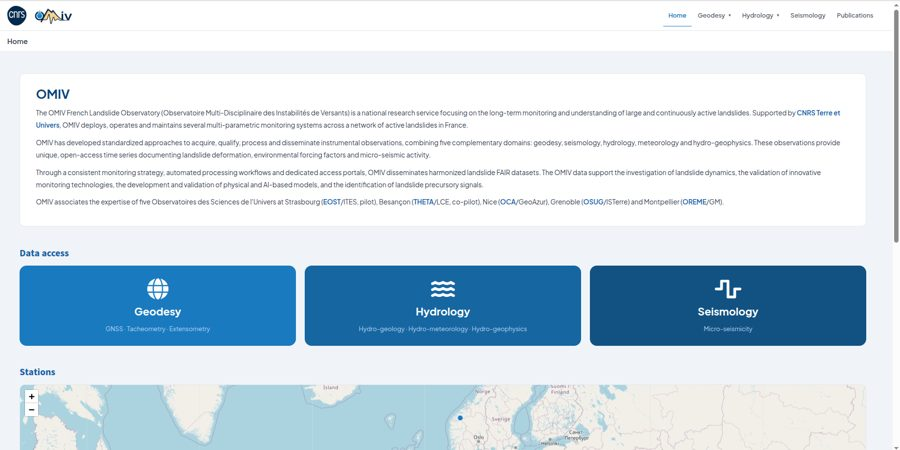
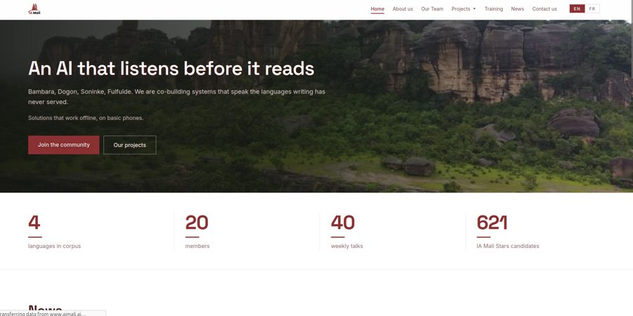

About
I'm a software engineer at CNRS in Besançon, France, with two years of experience building data platforms and web applications in Python, Java and JavaScript.
I build data platforms and back-end services for research: the Airflow pipelines that bring in sensor data, the APIs and web apps researchers use to explore it, and the Docker and GitLab CI/CD setup that runs it, with Keycloak single sign-on across services.
Outside work, I'm an early member of AI Mali, where we build AI tools and datasets for Malian languages (Bambara, Dogon, Soninke, Fulfulde) and software for reforestation in Mali.
Experience
-
2025 — Present
Software Engineer, Data Platform · CNRS
- Build and validate Apache Airflow pipelines in Python ingesting 10M+ environmental sensor records from several sources.
- Cut response times of key analytical PostgreSQL and MySQL queries by up to 60% through query rewrites and indexing.
- Operate Keycloak (OpenID Connect) authentication for 10 open-source services behind Traefik.
- Ship releases with Docker Compose through a tag-based GitLab CI/CD workflow, with Trivy scanning as a blocking stage.
Python · Airflow · PostgreSQL · Keycloak · Docker · GitLab CI/CD
-
2024 — 2025
Software Engineer · Forum des Marais Atlantiques
- Developed Java EE back-end features and web services with an Angular front end for a national environmental data platform.
- Introduced unit testing and verification-driven deployment, reducing production bugs by 25% and deployment time by 40%.
Java EE · Angular · Oracle
-
2024
Software Engineering Intern · Forum des Marais Atlantiques
- Turned stakeholder needs into 15 functional and technical requirements for a national Oracle wetlands database.
- Wrote the technical specification of a data architecture connecting 50,000+ datasets.
Projects
-
CNRS
OMIV web apps
I maintain the R Shiny web apps and Flask back-ends of OMIV, the French Landslide Observatory, a national research service supported by CNRS Terre et Univers and run with five observatories. I handle all of the platform's configuration. The apps give open access to geodesy, hydrology and micro-seismicity data. A new version goes live in November 2026.
R · Shiny · Flask · Docker

-
CNRS
KarstFlow
A web app I built for karst spring sensor data. Researchers upload raw files and the app detects and corrects sensor artefacts, such as out-of-water readings and isolated electronic spikes, while leaving real signal like floods untouched.
FastAPI · pandas · React · TypeScript
-
AI Mali
TimaTon
An offline-first reforestation app for field agents in Mali: the mobile app records plantings with GPS and syncs when a connection returns. I took part in the technical choices (architecture and stack) and will set up the iOS release.
React Native · Expo · SQLite · Node.js · PostgreSQL
-
AI Mali
aimali.ai ↗
Bilingual (French / English) website and admin CMS for AI Mali, built as one of three contributors.
React · Vite · Tailwind · Hono · Cloudflare Workers

-
AI Mali
Bambara language dataset
Collected and annotated 10,000+ Bambara words for a low-resource language dataset, as part of research on distributed AI for language modeling.